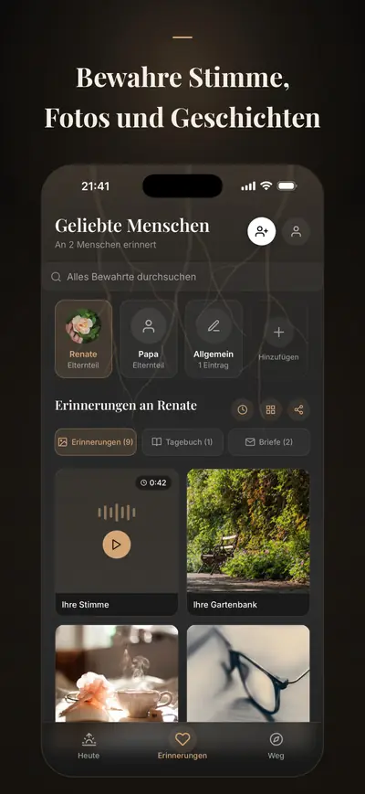
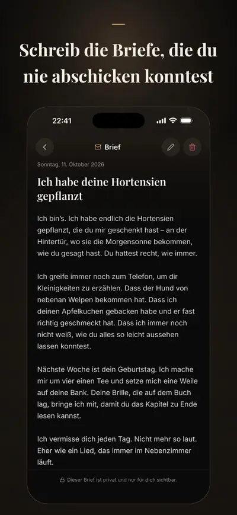

Solace Tree: Trauer & Trost
Tagebuch, Briefe, Erinnerungen
Solace Tree ist ein Trauertagebuch für den Menschen, den du verloren hast: Bewahre Fotos und Stimme, schreib die Briefe, die du nie abschicken konntest, und bereite dich auf schwere Tage vor.
Für iPhone. Kostenlos starten; Premium ist optional.


Premium ergänzt Pläne für Feiertage und erste Male an Tagen, die du festlegst, ein Gedenkbuch und eine verschlüsselte EU-Kopie, die auf ein neues iPhone zurückkommt.
Gemacht für die Monate nach einem Verlust, in denen alle glauben, es gehe dir besser – und es geht dir nicht besser. Erinnerungen, geführte Briefe, Tagebuch, Geburtstag und Todestag, Check-in, Atemübungen und Krisenhilfe bleiben kostenlos. Nichts drängt dich, nichts zählt Punkte, und nichts, was du schreibst, wird geteilt, wenn du es nicht willst.
ERINNERUNGEN BEWAHREN
- Fotos, Videos und Sprachaufnahmen, mit den Geschichten dahinter
- Eine Erinnerungs-Zeitleiste für jeden Menschen, an den du denkst
SCHREIB IHNEN
- Geführte Briefe, mit Premium tiefere Briefwege: was du nicht mehr sagen konntest, wofür du danken möchtest, was du weiterträgst
- Behutsame Reflexionsfragen für Tage, an denen die Worte fehlen
- Ein privates Tagebuch für alles dazwischen
VORBEREITET AUF SCHWERE TAGE
- Der Geburtstag und der Todestag; mit Premium auch Muttertag oder Vatertag und das erste Weihnachten ohne sie oder ihn, an Tagen, die du festlegst
- Kleine Rituale, die Halt geben: ein Atemzug, eine Erinnerung, ein stiller Moment; mit Premium ein Brief, ein Besuch oder eine Kerze
- Sanfte Erinnerungen ein paar Tage vorher, damit dich ein Datum nicht überrollt
AUS ERINNERUNGEN WERDEN ANDENKEN (PREMIUM ODER ANDENKEN-PAKET)
- Ein Gedenkbuch, eine Erinnerungs-Zeitleiste oder Gedenkkarten, bereit zum Drucken oder Aufbewahren
FÜR DIE SCHWEREN MOMENTE
- Ein kurzer täglicher Check-in, ohne Punkte und ohne Urteil
- Atem- und Erdungsübungen, wenn die Trauer im Körper sitzt
- Ein geführtes 30-Tage-Programm für die ersten Wochen nach einem Verlust
- Trost aus Glaubenstraditionen, wenn sie zu deinem Leben gehören
- Krisentelefon oder Notruf mit einem Tippen, wenn du mehr brauchst, als eine App geben kann
PRIVATSPHÄRE ZUERST
Deine Erinnerungen und Texte werden auf deinem iPhone gespeichert; deine Check-ins, Stimmungen und der Glaube, den du wählst, verlassen es nie, auch nicht mit Premium. Es gibt keine Werbung und kein Tracking. Mit Premium liegt eine Kopie in einem Cloud-Backup in der EU, verschlüsselt; fährst du im Profil mit Apple fort, kommt sie auf ein neues iPhone zurück, falls deins verloren geht.
PREMIUM
Premium ergänzt:
- Pläne für mehr schwere Tage: Feiertage, erste Male und eigene Daten
- Brief-, Besuchs- und Kerzenrituale
- Mehr Briefvorlagen und Reflexionsfragen
- Unbegrenzt viele geliebte Menschen, Erinnerungen und Tagebucheinträge
- Andenken-Exporte: Gedenkbücher und Erinnerungs-Zeitleisten
- Cloud-Backup und Synchronisierung, mit 250 MB für Fotos, Videos und Sprachaufnahmen
Solace Tree ist ein Begleiter und ersetzt keine professionelle Unterstützung. Krisentelefone und Notrufnummern nach Land
Verfügbar auf Deutsch, Englisch, Türkisch, Spanisch, Französisch und Arabisch.